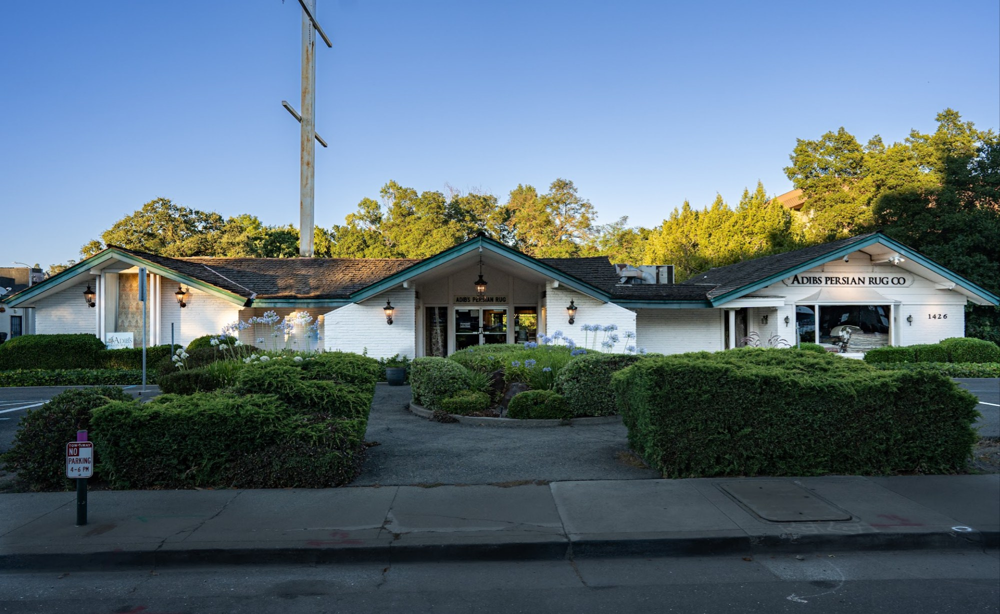
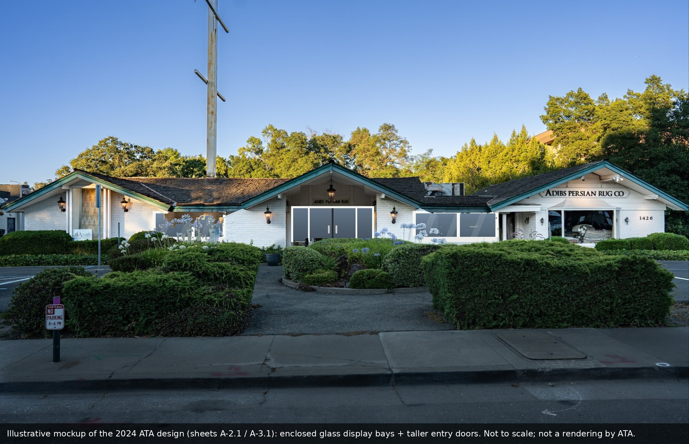

Reference toolkit · 19 Oct 2026
Walnut Creek, CA 94596 · APN 183-030-005 · 3D Matterport tour
Ali Adib, P.E., ATA Engineering. All sheets on the Drawings tab.


| New enclosed space | Width | Depth | Area | Basis |
|---|---|---|---|---|
| West display area | 17′-0″ ± | 5′-2″ | ≈ 88 sf | A-2.1 width · A-1.1 depth |
| East display area | 20′-9¼″ | 5′-2″ | ≈ 107 sf | A-2.1 width · A-1.1 depth |
| Entry vestibule (porch enclosed) | 12′-9″ | ≈ 13′ (scaled) | ≈ 166 sf | A-2.1 width · depth scaled from A-2.1 |
| Total newly enclosed | ≈ 361 sf | All non-conditioned; existing building ≈ 3,727 sf |
| Change | Existing | 2024 ATA design | Sheet |
|---|---|---|---|
| Walkway bays | Open, roofed walkways | Enclosed display areas, non-conditioned | A-2.1 |
| Bay walls | None | 2×6 pony wall, 3-coat ⅞″ stucco both faces, fixed tempered double-pane glazing | A-3.1 |
| Bay floor | Walkway paving | New 4″ slab, #3 @ 12″ o.c. each way, on new footing | S-1, SD-1 |
| Walkway posts | 7×7 / 6×6 posts | New 6×6 posts (3 locations); existing headers kept | A-2.1, S-1 |
| Entry | Open porch; (2) 3′-0″ × 6′-8″ doors | New outer glass door pair 7′-0″ × 8′-0″ (2 × 3′-6″), double-pane tempered; fixed sidelights 2′-3″± × 7′-6″; existing doors stay as inner doors → secure vestibule | A-2.1, ATA email 8/6/2024 |
| Security doors | None | New security door from each display area to the porch | A-2.1 |
| Porch posts | — | New P.T. 4×6 posts at the new entry | A-2.1 |
| Roof, electrical, HVAC, site | Unchanged (all work under existing roofs; electrical as-is; non-conditioned; no site work). A-2.1 notes "new lights by others". | ATA letter 8/8/2024 · A-0.1 | |
Plan status: permit set dated 2024-08-10, not submitted. Stamp shows CE49976 exp. 6-30-25; sheets cite 2022 codes (2025 codes in effect since 1 Jan 2026).
Source: City of Walnut Creek permit portal and issuance notice, 13 Oct 2026.
| Item | Value | Source |
|---|---|---|
| Zoning / General Plan | C-R / GR | PRT 19-011, Aug 2019 |
| Lot area | 22,137 sf (city) · 20,240 sf (ATA sheet) · 20,169 sf excl. dedication (survey) | Staff report 5/2020 · A-0.1 · survey 1318 |
| Occupancy / construction | M / IIIB, 8″ CMU + wood frame, 1 story | A-0.1 |
| Height limit | 35 ft | City letter 11/22/2019 |
| Shared access | Recorded revocable license with neighbor (Sinovest) | License v09, 2020 |
| Element | Dimension | Sheet |
|---|---|---|
| Overall length × depth | 96′-6″ × 41′-2″ | A-1.1 |
| Entry porch width | 12′-9″ | A-1.1 |
| Front walkway bays (W / E) | ≈17′-0″ / ≈20′-9″ wide | A-2.1 |
| Existing entry doors | (2) 3′-0″ × 6′-8″ | ATA email 8/6/2024 |
| Walkway posts | 6×6 / 7×7, under existing headers | A-1.1, A-2.1 |
| Roof pitches | 5:12 main · 2:12 / 1:12 walkways · flat at mech. | A-1.1 |
| Constraint | Value | Effect | Source |
|---|---|---|---|
| Creek structural setback (CCCFCD) | 30 ft from 2.5:1 line off creek toe | ≈⅓ of existing building inside it | Staff report 5/28/2020 |
| Creek Preserve Area | 50 ft from creek centerline | Rear of lot | Staff report 5/28/2020 |
| Street setback (GP Fig. 11) | 20–30 ft, 25 ft avg | Exception "could be considered" (2020) | AppStat1 11/2019 · staff report |
| Future street line | 50 ft from Main St centerline | Dedication on new development | AppStat2 4/2020 |
| Parking reduction | max 20% | Staff: unlikely to support reduction (2019); 22 parking spots if retail only (2020) | PRT 2019 · staff report 2020 |
| Parking spot location | ≥10 ft from back of sidewalk | Front parking spots limited | PRT 2019 · AppStat1 |
| Building code | 2025 California codes (eff. 1 Jan 2026) | 2024 ATA set cites 2022 codes | A-0.1 |
| Name | Role | Contact |
|---|---|---|
| Ali Adib, P.E. | Civil engineer, local lead · ATA Engineering, Redwood City | ata@ataeng.net · (650) 363-2338 |
| Medi Adibnatanzi | Coordinator | thenatanzi@gmail.com |
| Ray Adib | Owner / applicant on 2024 drawings | ray@adibs.com · (925) 937-3338 |
| David Barnes | SolCore, Inc. (CSLB 1123152) | davidbarnes@solcorepower.com · 833-765-2673 |
| City of Walnut Creek, Building | Permits, inspections | buildingtech@walnut-creek.org · (925) 943-5834 |
| City Planning (2019–20) | C. Griffin, A. Carreon | Griffin@ / Carreon@walnut-creek.org |